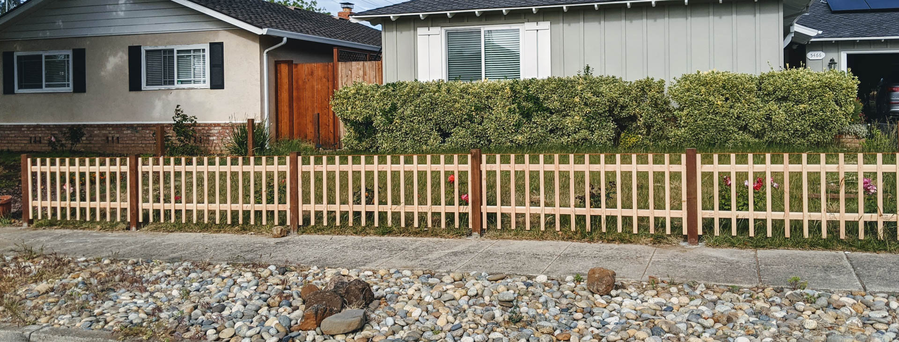

Front Yard Fence
코로나바이러스 COVID-19로 인해 집에서 일하게 되면서, 그동안 밀린 집관리를 할 수 있는 시간이 나더군요. 그래서 그동안 미뤄오던 앞마당에 울타리를 만들기로 했습니다.
4월 초 즈음에 땅을 파기 시작해서 지난 토요일(9일)에 마쳤으니 한달정도가 걸렸네요. 울타리 만들기는 해본 적도 없어서 시작부터 막막했었습니다. 주변에 울타리를 직접 만드신 분이 계셔서, 알음알음 묻고, 유투브 보면서 공부해 가며 만들었네요.
만드는 순서는 아래와 같습니다.
- 울타리 기둥(post)을 심기위해 땅을 판다.
- 포스트를 알맞은 길이로 자른다.
- 땅에 포스트를 고정시키고 시멘트를 부어서 양생한다
- 포스트 사이에 가로로 나무를 고정시킨다.
- 포스트 가로 나무에 세로 갈빗살을 고정시킨다.
- 페인트를 칠한다. 2~3 단계 사이에 해도 됨.
땅파기
아쉽게도 땅을 파는 사진을 찍지 못했습니다. 간단히 6단계정도 되지만, 저에겐 가장 힘들었던게 땅을 파는 것이었던 것 같네요. 저희 집 앞마당이 예전에 높은 단이 있었습니다. 이전 집 주인이 그 단을 허물고 경사지게 만들어서 땅에 잔디를 심어두었죠. 그런 이유 때문인지 바닥을 10센티미터 정도만 파면 자갈과 큰 돌이 무척 많습니다.
포스트를 심으려면 적어도 포스트 길이의 1/3 정도는 땅 속에 묻어야 포스트가 바람에 넘어가지 않는다고 합니다. 만일 포스트 사이를 완전히 막으려고 한다면 길이의 절반 정도까지 묻어야 합니다. 제가 살고 있는 도시의 코드가 앞마당은 3피트 (90센티)를 넘으면 허가(퍼밋)가 필요해서, 퍼밋이 필요하지 않은 3피트로 울타리를 심기로 했습니다. 즉, 땅속을 1피트(30센티)정도는 파야됩니다.
10센티를 파고 그 밑으로 20센티를 더 파내는 작업이 무척 오래 걸렸습니다. 큰 기계로 한방에 파내면 좋겠지만, 앞마당 펜스 만드는 데 300불 정도 들어가는데 대여값만 그보다 더 비싼 기계를 빌려올 수는 없었죠. 결국 삽 하나로 돌을 깨가며 총 12개의 구멍을 팠네요. 구멍은 약 1피트 넓이로 파야 합니다. 그래야 양쪽의 시멘트가 포스트를 단단히 고정해 줍니다. 너무 좁게 파면 시멘트가 별로 뭉치지 않아서 쉽게 넘어갑니다.
그리곤 제 최애 쇼핑몰 홈디포에 가서 필요한 나무를 사왔습니다. 포스트가 땅 위로 3피트, 땅 속으로 1피트 들어가니 8피트짜리 pressure treated 4x4 나무를 6개 사왔습니다. 땅에 심기는 나무는 물기에 썪기 쉬워서 잘 안썪는 Cedar, Redwood 같은 비싼 나무나 아니면 약품 처리된 Pressure-treated 를 사야 합니다. 전 돈이 별로 없으므로 제일 저렴한 pressure-treated 나무로 사왔네요. :)
가로로 포스트 사이를 연결할 2x3 8ft 나무 25개, 그리고 세로로 모양을 낼 갈빗살 나무 1x2 8ft 짜리를 60개 사왔습니다. 세로 나무는 일단 울타리 길이를 재고 6인치당 2.5피트짜리 나무 한개씩 세운다고 할 때 8피트에 3개를 만들 수 있으니 180개의 2.5피트짜리 나무가 나옵니다. 이만큼은 필요가 없고, 조금 여유분을 가지고 사왔습니다.
포스트와 갈빗살 자르기
구입한 나무를 Miter Saw를 이용해 알맞은 길이로 자릅니다. 포스트는 4피트로 자르고, 세로 갈빗살은 2.5 피트로 자릅니다. 갈빗살이 길이가 딱 맞아떨어지게 잘라지진 않았네요. 마이터쏘를 그냥 땅에 두고 잘라서 길이를 딱 맞추기 어려웠습니다. 스탠드에 두고 길이 조정해가며 잘랐다면 좀 더 깔끔하게 잘랐을 것 같네요.
가로 나무는 자르지 않았습니다. 포스트를 세울 때 정확하게 간격을 맞추기 어려울 것 같아서 포스트 세운 다음 일일히 길이 재어서 딱 맞춰서 자르기 위해 미리 잘라두진 않았네요.
포스트 세우기
이제 땅도 팠고 포스트도 준비되었으니, 포스트를 세울 차례입니다. 여기서 시멘트를 섞어서 포스트 바닥에 두어야 하는데, 전 Quikrete라는 제품을 사용했습니다. Quikrete 제품이 정말 많은데, 그중에 미리 섞을 필요없이 땅에 붓고 물만 뿌리면 되는 빨간색 Quikrete를 구매했네요. 시멘트를 모래와 섞고 물 부어서 젓는게 쉽다면 쉬운 일인데, 구지 많은 시멘트를 써야하는 것도 아니기에 좀 간편한 녀석으로 샀습니다. 다만 이녀석은 깊이가 2피트 이상 넘어가면 물이 밑으로 잘 흡수가 되질 않아 깊은 곳은 안 굳을 수 있다고 하더군요. 그래도 제가 설치할 펜스 포스트는 1피트 정도 깊이밖에 되질 않아서 안심하고 사용했습니다.
먼저 코너에 포스트를 세웁니다. 이 때 유용하게 쓰였던 게 포스트용 레벨이었습니다. 직각으로 레벨이 달려있어서 양쪽의 레벨을 한번에 잡기 편하더군요. 콘크리트 믹스를 붓고 레벨을 맞추고 3피트 높이로 나오게 해서 물을 부어 코너 포스트를 설치했네요. 그리고 굳기를 기다린 다음에 그 사이를 실로 팽팽하게 연결해 주었습니다. 이 실이 기준점이 되어 사이의 포스트를 설치할 때 높이를 쉽게 맞출 수 있었습니다.
콘크리트가 굳는데 4시간 정도 걸려서 한번에 포스트를 다 세우진 못했고, 하루에 조금씩 해서 일주일 동안 틈틈히 설치했네요.
가로로 나무 설치하기
포스트를 세웠으니 이제 그 사이를 연결 할 나무를 설치할 차례입니다. 위에 쓴것처럼 가로 나무는 하나 하나 길이를 재 가며 잘라서 연결했습니다. 실제로 포스트 세우고 보니 포스트 사이 거리가 제각각이더군요. 미리 잘라뒀으면 못 쓸 나무들이 많았을 것 같네요. 게다가 집으로 들어가는 쪽 포스트는 직선도 아니라 정말 세심하게 재서 잘라야 했습니다.
가로로 나무를 설치할 때에도 실로 똑바르게 선을 맞춰서 연결하니 무척 편했습니다. 덕분에 다 연결하고도 크게 삐뚤삐뚤하지 않더군요.
세로 갈빗살 설치하기
가로로 나무를 전면만 설치하고 어떤 모양일지 궁금해서, 나머지 연결도 안하고 일단 세로 갈빗살 나무를 설치해 보았습니다. 세로로 연결할 때도 마찬가지로, 윗부분에 실로 수평을 맞춰둔 후 그 높이에 맞게 세로로 나무를 설치했네요. 이 때 세로는 레벨을 이용해서 수직이 되게 맞췄습니다. 그렇게 하지 않으면 눈대중으로 세로로 연결하게 되서 나중에 간격이 딱 맞지 않게 보기가 흉해진다고 하더군요. 뭐든 도구가 최곱니다.

페인트 칠하기
전면은 페인트를 칠하지 않고 먼저 나무부터 설치해서, 설치된 상태로 페인트를 칠했습니다. 장장 5시간동안 아내와 둘이서 땀 뻘뻘흘리며 페인트를 칠하고 나니, '미리 페인트를 칠해둘 걸' 하는 생각이 절로 들더군요. 예전에 뒷마당 펜스에 페인트 칠을 할 때 그 고생을 해두고 2년이 지났다고 벌써 잊어먹고 똑같은 실수를 반복하네요.
페인트는 홈디포에서 펜스용 페인트를 사서 칠했습니다. 흰색을 할지 나무색을 할 지 고민했는데, 나무 재질이 좋은 것도 아니라서 나무색 보다는 흰색이 낫겠다 싶더군요. 페인트는 홈디포 브랜드로 구매했습니다. 귀찮아서요..
미리 페인트 칠해둔 갈빗살 설치
양쪽 옆은 미리 페인트를 칠하고 설치했습니다. 앞마당이 경사가 있다보니 경사지게 나무를 자르는 게 조금 어려웠는데 나무 하나 망치고 성공했네요. :)
완성
완성된 펜스를 보니 뿌듯합니다. 처음엔 정말 막막하게만 느껴졌는데 한단계 한단계 하다보니 결국 완성이 되네요. 너무 오랫동안 신경을 써서 그런지, 두달 정도는 된 줄 알았는데 한달 걸렸더군요. 주말에만 할 수 있어서 길게 걸렸지 매일 할 수 있었다면 일주일 안에는 할 수 있을 것 같습니다. 아직 겨울을 나지 않아서, 우기에 나무가 뒤틀리진 않을까 걱정이 되긴 합니다. 그래도 어떻게 설치하는 지 감을 잡았으니 좀 망가지더라도 다시 만들 수 있겠다는 생각이 들더군요.